<!DOCTYPE html PUBLIC "-//W3C//DTD XHTML 1.1//EN"
  "http://www.w3.org/TR/xhtml11/DTD/xhtml11.dtd">
<html xmlns="http://www.w3.org/1999/xhtml" xml:lang="en">
<head>
<meta name="generator" content="jemdoc, see http://jemdoc.jaboc.net/" />
<meta http-equiv="Content-Type" content="text/html;charset=utf-8" />
<link rel="stylesheet" href="jemdoc.css" type="text/css" />
<title>Xinwei Sun</title>
</head>
<body>
<div id="layout-content">
<div id="toptitle">
<h1>Xinwei Sun</h1>
</div>
<table class="imgtable"><tr><td>
<a href="https://sunxw.github.io/"></a>&nbsp;</td>
<a href="https://sds.fudan.edu.cn/">Fudan University, School of Data Science</a><br />
Phone: +86 13718916343  <br />
Email: sunxinwei@fudan.edu.cn <br />
<br />
</td></tr></table>
<h2>About me</h2>
<p style=font-size:20px>I am now a tenure-track assistant professor in the School of Data Science, at Fudan University. Before that, I received Ph.D. in Statistics at the School of Mathematical Science, Peking University, advised by <a href="https://yao-lab.github.io/">Yuan Yao</a> and <a href="https://cfcs.pku.edu.cn/english/people/faculty/yizhouwang/index.htm">Yizhou Wang</a>.</p> 
<p style=font-size:20px> My research interests focus on statistical theory (including sparsity learning; and causal inference), with their applications in Artificial Intelligence including machine learning, neuroimaging analysis, computer vision, etc</a>.</p>
<h2>Education & Research Stay</h2>
<p style=font-size:20px> 2019-2022  Researcher. Microsoft Research Asia (Machine Learning group)</a>.</p>
<p style=font-size:20px> 2013-2018  Ph.D.  School of Mathematical Sciences at Peking University</a>.</p>
<p style=font-size:18px> 2009-2013  B.S.   School of Mathematical Sciences at Nankai University</a>.</p>
<h2>Teaching</h2>
<p style=font-size:20px> 2023 Fall,  Advanced Statistical Theory</a>.</p>
<p style=font-size:20px> 2023 Spring,  Advanced Statistical Theory</a>.</p>
<p style=font-size:20px> 2023 Spring,  Mathematical Statistics</a>.</p>
<p style=font-size:20px> 2022 Fall,  Advanced Regression Analysis</a>.</p>
<h2>Publications</h2> <p>(*Co-first Author/Alphabetic Order #Corresponding Author)</p>
<ul>
<h2>Sparsity Learning and Statistical Inference</h2>
<ul>
<li><p style=font-size:20px>Split Knockoffs for Multiple Comparisons: Controlling the Directional False Discovery Rate. </a> <br />
Yang Cao*, <b>Xinwei Sun*#</b>, Yuan Yao*. <br />
<i> Accepted by Journal of the American Statistical Association <b>(JASA)</b>, 2023.</p>
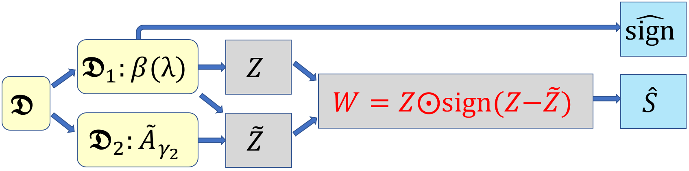
</li>
</ul>
<ul>
<li><p style=font-size:20px><a href="https://arxiv.org/abs/2103.16159">Controlling the False Discovery Rate in Transformational Sparsity: Split Knockoffs.</a> <br />
Yang Cao*, <b>Xinwei Sun*#</b>, Yuan Yao*. <br />
<i> Accepted by Journal of the Royal Statistical Society: Series B <b>(JRSSB)</b>, 2023.</p>

</li>
</ul>
<ul>
<li><p style=font-size:20px><a href="https://www.sciencedirect.com/science/article/pii/S1063520318300010">Boosting with Structural Sparsity: A Differential Inclusion Approach.</a> <br />
Chendi Huang*, <b>Xinwei Sun*</b>, Jiechao Xiong*, Yuan Yao*#. <br/>
<i>Applied and Computational Harmonic Analysis. <b>(ACHA)</b>, 2020.</p>

</li>
</ul>
<ul>
<li><p style=font-size:20px><a href="https://ieeexplore.ieee.org/abstract/document/9187891/">Perturbed Amplitude Flow for Phase Retrieval.</a> <br />
Bing Gao*, <b>Xinwei Sun*</b>, Yang Wang*#, Zhiqiang Xu*. <br/>
<i>IEEE Transactions on Signal Processing. <b>(IEEE TSP)</b>, 2020.</p>

</li>
</ul>
<ul>
<li><p style=font-size:20px><a href="https://dl.acm.org/doi/abs/10.1145/3603165.3607367">Sparse Learning in AI: A Differential Inclusion Perspective.</a> <br />
<b>Xinwei Sun*</b>. <br/>
<i>Proceedings of the ACM Turing Award Celebration Conference-China 2023.</p>
</li>
</ul>
<ul>
<li><p style=font-size:20px><a href="https://arxiv.org/abs/2301.00545">Knockoffs-SPR: Clean Sample Selection in Learning with Noisy Labels.</a> <br />
Bing Gao*, Yanwei Fu*,<b>Xinwei Sun#</b>. <br/>
<i>Major revision requested at <b>(IEEE TPAMI)</b>.</p>
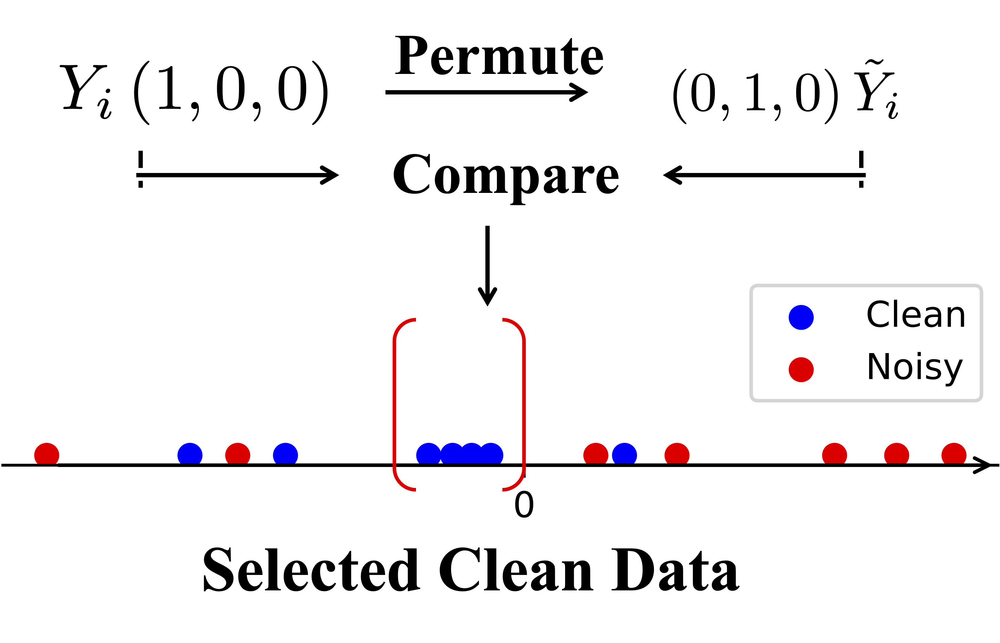
</li>
</ul>
<ul>
<li><p style=font-size:20px><a href="https://arxiv.org/abs/1905.09449">Exploring Structural Sparsity of Deep Networks via Inverse Scale Spaces.</a> <br />
Yanwei Fu, Chen Liu, Donghao Li, Zuyuan Zhong, Xinwei Sun, Jinshan Zeng, and Yuan Yao#. <br />
<i>IEEE Transactions on Pattern Analysis and Machine Intelligence <b>(IEEE TPAMI)</b>, 2023.</p>
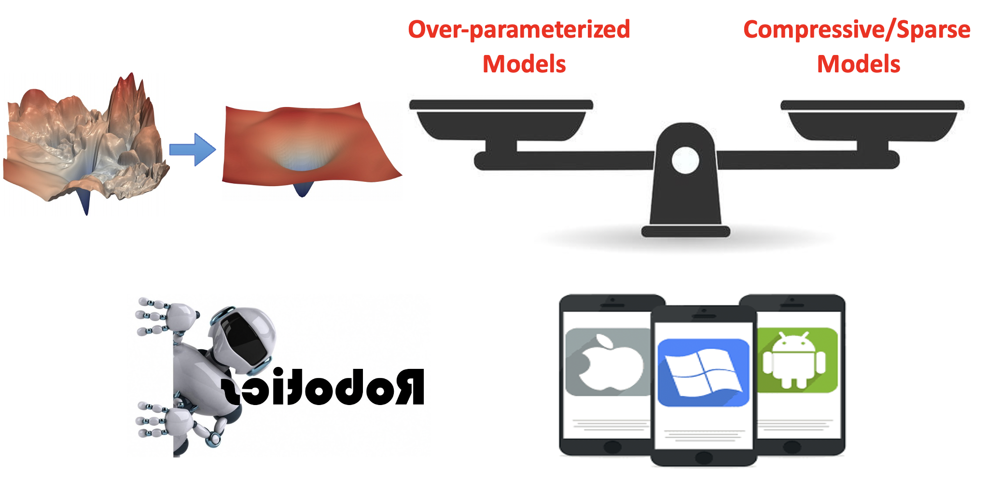
</li>
</ul>
<ul>
<li><p style=font-size:20px><a href="http://webcache.googleusercontent.com/search?q=cache:SO4uNurgiHsJ:proceedings.mlr.press/v119/fu20d/fu20d.pdf+&cd=4&hl=zh-CN&ct=clnk&gl=hk">DessiLBI: Exploring Structural Sparsity of Deep Networks via Dierential Inclusion Paths.</a> <br />
Yanwei Fu, Chen Liu, Donghao Li, Zuyuan Zhong, <b>Xinwei Sun</b>, Jinshan Zeng#, Yuan Yao#. <br/>
<i>International Conference on Machine Learning <b>(ICML)</b>, 2020.</p>

</li>
</ul>
<ul>
<li><p style=font-size:20px><a href="https://arxiv.org/abs/2203.07788">Scalable Penalized Regression for Noise Detection in Learning with Noisy Labels.</a> <br />
Yikai Wang, <b>Xinwei Sun</b>, Yanwei Fu#. <br />
<i>IEEE Computer Society Conference on Computer Vision and Pattern Recognition <b>(CVPR)</b>, 2022. </p>
</li>
</ul>
<ul>
<li><p style=font-size:20px><a href="https://webcache.googleusercontent.com/search?q=cache:QdW-9vRqEW4J:https://proceedings.neurips.cc/paper/2019/hash/333ac5d90817d69113471fbb6e531bee-Abstract.html+&cd=2&hl=zh-CN&ct=clnk&gl=hk">iSplit LBI: Individualized Partial Ranking with Ties via Split LBI.</a> <br />
Qianqian Xu, <b>Xinwei Sun</b>, Zhiyong Yang, Xiaochun Cao, Qingming Huang, Yuan Yao. <br/>
<i>Annual Conference on Neural Information Processing Systems <b>(NeurIPS)</b>, 2019.</p>
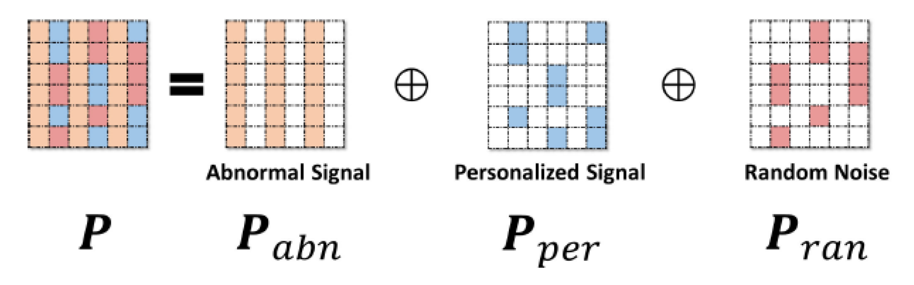
</li>
</ul>
<ul>
<li><p style=font-size:20px><a href="http://proceedings.mlr.press/v80/zhao18c.html">MSplit LBI: Realizing Feature Selection and Dense Estimation in Few-shot and Zero-shot Learning.</a> <br />
<b>Xinwei Sun*</b>, Bo Zhao*, Yanwei Fu#, Yuan Yao#, Yizhou Wang. <br/>
<i>International Conference on Machine Learning <b>(ICML)</b>, 2018.</p>
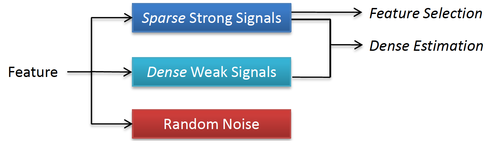
</li>
</ul>
<ul>
<li><p style=font-size:20px><a href="https://webcache.googleusercontent.com/search?q=cache:k5pToxsJGXQJ:https://www.ecva.net/papers/eccv_2020/papers_ECCV/papers/123480171.pdf+&cd=3&hl=zh-CN&ct=clnk&gl=hk">TCGM:An Information-Theoretic Framework for Semi-Supervised Multi-Modality Learning.</a> <br />
<b>Xinwei Sun*</b>, Yilun Xu*, Peng Cao, Yuqing Kong#, Lingjing Hu, Shanghang Zhang#, Yizhou Wang. <br />
<i>European Conference on Computer Vision <b>(ECCV Oral)</b>, 2020. </p>
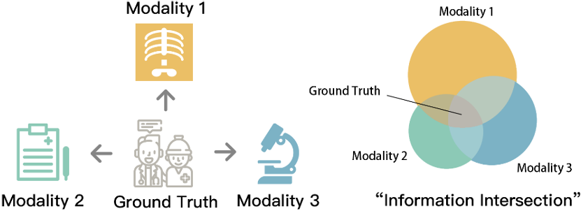
</li>
</ul>
<ul> 
<li><p style=font-size:20px><a href="https://webcache.googleusercontent.com/search?q=cache:UnvkZ3EBCAEJ:https://proceedings.neurips.cc/paper/2016/hash/2451041557a22145b3701b0184109cab-Abstract.html+&cd=3&hl=zh-CN&ct=clnk">Split LBI: An Iterative Regularization Path with Structural Sparsity.</a> <br />
Chendi Huang*, <b>Xinwei Sun*</b>, Jiechao Xiong*, Yuan Yao*#. <br/>
<i>Advances in Neural Information Processing Systems <b>(NeurIPS)</b>, 2016.</p>

</li>
</ul>
<ul> 
<li><p style=font-size:20px><a href="https://link.springer.com/chapter/10.1007/978-3-030-00928-1_69">FDR-HS: An Empirical Bayesian Identification of Heterogenous Features in Neuroimage Analysis.</a> <br />
<b>Xinwei Sun</b>, Lingjing Hu#, Yuan Yao#, Yizhou Wang. <br />
<i>Medical Image Computing and Computer Assisted Interventions Conference. <b>(MICCAI)</b>, 2018. </p>
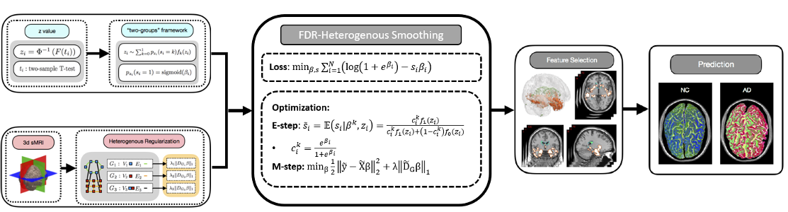
</li>
</ul>
<ul>
<li><p style=font-size:20px><a href="springerprofessional.de/en/gsplit-lbi-taming-the-procedural-bias-in-neuroimaging-for-diseas/14978580">GSplit LBI: Taming the Procedural Bias in Neuroimaing for Disease Prediction.</a> <br />
<b>Xinwei Sun</b>, Lingjing Hu#, Yuan Yao#, Yizhou Wang. <br />
<i>Medical Image Computing and Computer Assisted Interventions Conference. <b>(MICCAI)</b>, 2017. </p>

</li>
</ul>
<h2>Causal Learning and Out-Of-Distribution Generalization</h2>
<ul>
<li><p style=font-size:20px><a href="https://arxiv.org/abs/2305.05276">Causal Discovery from Subsampled Time Series with Proxy Variables.</a> <br />
Mingzhou Liu, <b>Xinwei Sun#</b>, Lingjing Hu, Yizhou Wang. <br />
<i>Conference on Neural Information Processing Systems <b>(NeurIPS)</b>, 2023. </p>

</li>
</ul>
<ul>
<li><p style=font-size:20px>Which Invariance should we Transfer? A Causal Minimax Learning Approach.</a> <br />
Mingzhou Liu, Xiangyu Zheng, <b>Xinwei Sun#</b>, Fang Fang, Yizhou Wang. <br />
<i>International Conference on Machine Learning <b>(ICML)</b>, 2023.<a href="pdf/which_invariance_causality.pdf">[PDF]</a></i></p>
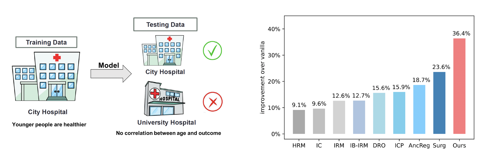
</li>
</ul>
<ul>
<li><p style=font-size:20px><a href="https://proceedings.neurips.cc/paper/2021/file/8c6744c9d42ec2cb9e8885b54ff744d0-Paper.pdf">Recovering Latent Causal Factor for Generalization to Distributional Shifts.</a> <br />
<b>Xinwei Sun#</b>, Botong Wu, Xiangyu Zheng, Chang Liu, Wei Chen, Tao Qin, Tie-Yan Liu. <br />
<i>Conference on Neural Information Processing Systems <b>(NeurIPS)</b>, 2021. </p>

</li>
</ul>
<ul>
<li><p style=font-size:20px><a href="https://papers.nips.cc/paper/2021/hash/310614fca8fb8e5491295336298c340f-Abstract.html">Learning Causal Semantic Representation for Out-of-Distribution Prediction.</a> <br />
Chang Liu#, <b>Xinwei Sun</b>, JindongWang, Haoyue Tang, Tao Li, Tao Qin, Wei Chen, Tie-Yan Liu. <br />
<i>Conference on Neural Information Processing Systems <b>(NeurIPS)</b>, 2021. </p> 

</li> 
</ul>
<ul>
<li><p style=font-size:20px>A New Causal Decomposition Paradigm towards Health Equity.</a> <br />
<b>Xinwei Sun#</b>, Xiangyu Zheng, Jim Weinstein. <br />
<i>International Conference on Artificial Intelligence and Statistics <b>(AISTATS)</b>, 2023.<a href="pdf/147.pdf">[PDF]</a></i></p>

</li>
</ul>
<ul>  
<li><p style=font-size:20px><a href="https://openreview.net/forum?id=-HHJZlRpGb">Learning Domain-Agnostic Representation for Disease Diagnosis.</a> <br />
Chu-ran Wang, Jing Li, <b>Xinwei Sun#</b>, Fandong Zhang, Yizhou Yu, Yizhou Wang. <br />
<i>International Conference on Learning Representations <b>(ICLR)</b>, 2023. </p>
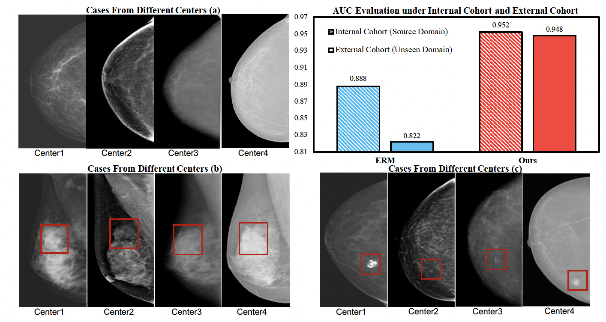
</li>
</ul>
<ul>
<li><p style=font-size:20px><a href="https://openreview.net/forum?id=gUZWOE42l6Q">Out-of-distribution Representation Learning for Time Series Classification.</a> <br />
Wang Lu, Jindong Wang, <b>Xinwei Sun</b>, Yiqiang Chen, Xing Xie. <br />
<i>International Conference on Learning Representations <b>(ICLR)</b>, 2023. </p>
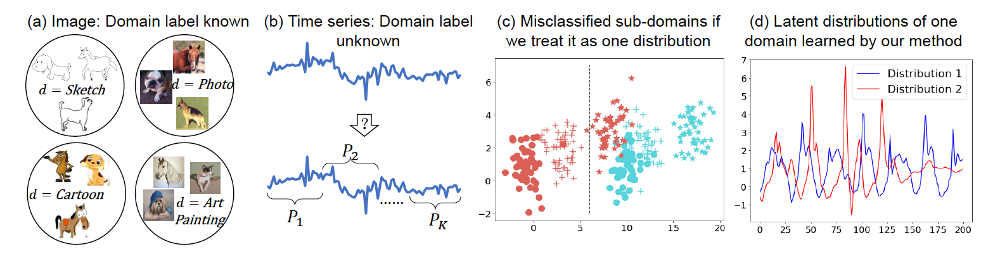
</li> 
</ul>
<ul>
<li><p style=font-size:20px><a href="https://ieeexplore.ieee.org/abstract/document/9956886">PatchMix Augmentation to Identify Causal Features in Few-shot Learning.</a> <br />
Chengming Xu*, Chen Liu*, <b>Xinwei Sun#</b>, Siqian Yang, Yabiao Wang, Chengjie Wang, Yanwei Fu#. <br />
<i>IEEE Transactions on Pattern Analysis and Machine Intelligence <b>(IEEE TPAMI)</b>, 2022. </p>

</li>
</ul>
<ul>
<li><p style=font-size:20px><a href="https://ieeexplore.ieee.org/abstract/document/9540781">Bilateral Asymmetry Guided Counterfactual Generating Network for Mammogram Classification</a> <br />
Churan Wang*, Jing Li*, Fandong Zhang, <b>Xinwei Sun#</b>, Hao Dong, Yizhou Wang#. <br />
<i>IEEE Transactions on Image Processing <b>(IEEE TIP)</b>, 2021. </p> 

</li>
</ul>
<ul>
<li><p style=font-size:20px><a href="https://openaccess.thecvf.com/content/CVPR2021/papers/Li_Causal_Hidden_Markov_Model_for_Time_Series_Disease_Forecasting_CVPR_2021_paper.pdf">Causal Hidden Markov Model for Time Series Disease Forecasting.</a> <br />
Jing Li, Botong Wu, <b>Xinwei Sun#</b>, Yizhou Wang. <br />
<i>IEEE Computer Society Conference on Computer Vision and Pattern Recognition <b>(CVPR)</b>, 2021. </p>
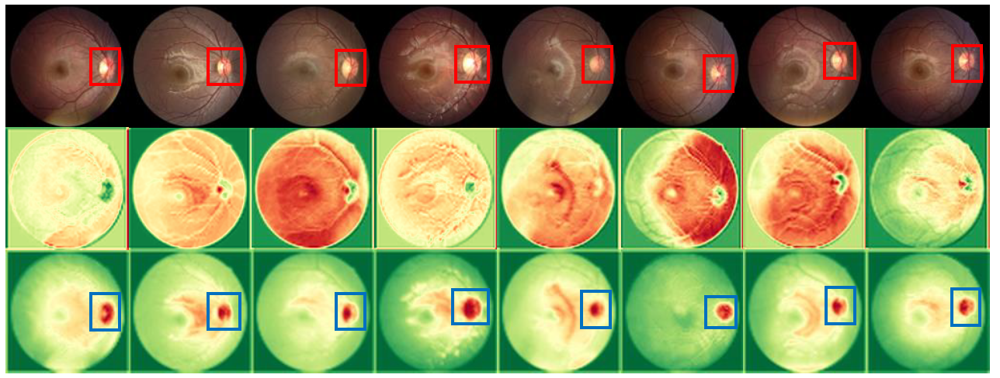
</ul>
<h2>Applications</h2>
<ul>
<li><p style=font-size:20px><a href="https://openaccess.thecvf.com/content/CVPR2021/papers/Wu_Forecasting_Irreversible_Disease_via_Progression_Learning_CVPR_2021_paper.pdf">Disease Forecast via Progression Learning.</a> <br />
Botong Wu*, Sijie Ren*, Jing Li, <b>Xinwei Sun#</b>, Shiming Li, Yizhou Wang. <br />
<i>IEEE Computer Society Conference on Computer Vision and Pattern Recognition <b>(CVPR)</b>, 2021. </p>
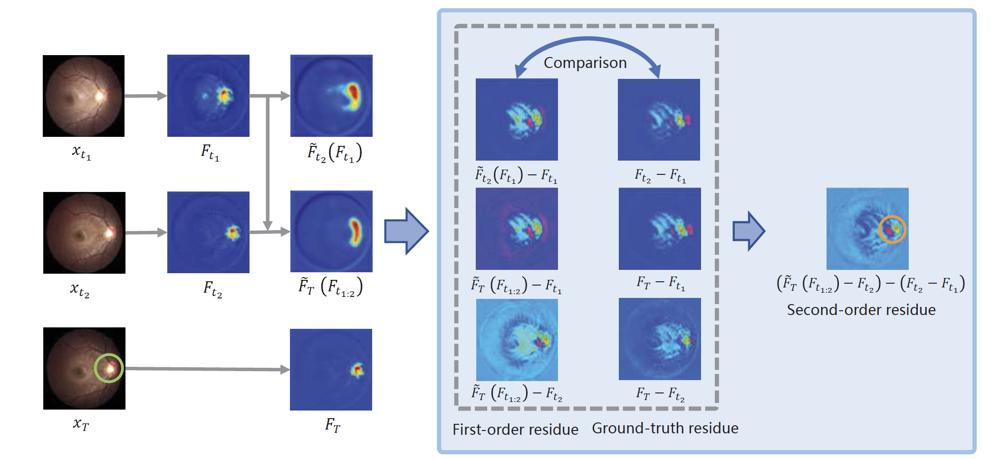
</li>
</ul>
<ul>
<li><p style=font-size:20px><a href="https://miccai2021.org/openaccess/paperlinks/2021/09/01/079-Paper0053.html">CA-Net: Leveraging Contextual Features for Lung Cancer Prediction.</a> <br />
Mingzhou Liu, Fandong Zhang, <b>Xinwei Sun#</b>, Yizhou Yu, Yizhou Wang. <br />
<i>Medical Image Computing and Computer Assisted Interventions Conference. <b>(MICCAI)</b>, 2021. </p>
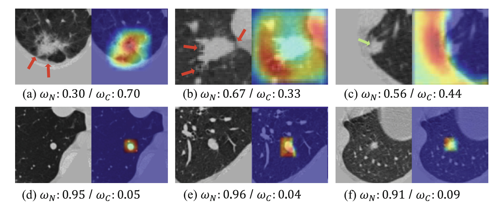
</li>
</ul>
<ul>
<li><p style=font-size:20px><a href="https://link.springer.com/chapter/10.1007/978-3-030-87240-3_5">DAE-GCN: Identifying Disease-Related Features for Disease Prediction.</a> <br />
Chu-ran Wang, <b>Xinwei Sun#</b>, Fandong Zhang, Yizhou Yu, Yizhou Wang. <br />
<i>Medical Image Computing and Computer Assisted Interventions Conference. <b>(MICCAI)</b>, 2021. </p>
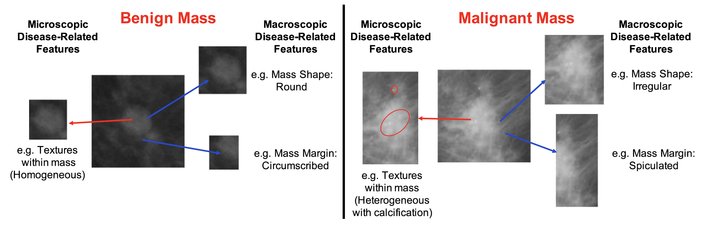
</li>
</ul>
<ul>
<li><p style=font-size:20px><a href="https://webcache.googleusercontent.com/search?q=cache:RmmCPJdD4p4J:https://openaccess.thecvf.com/content_ICCV_2019/papers/Wu_Learning_With_Unsure_Data_for_Medical_Image_Diagnosis_ICCV_2019_paper.pdf+&cd=2&hl=zh-CN&ct=clnk">Learning with Unsure Data for Medical Image Diagnosis.</a> <br />
Botong Wu, <b>Xinwei Sun#</b>, Lingjing Hu, Yizhou Wang. <br />
<i>IEEE International Conference on Computer Vision <b>(ICCV)</b>, 2019. </p>
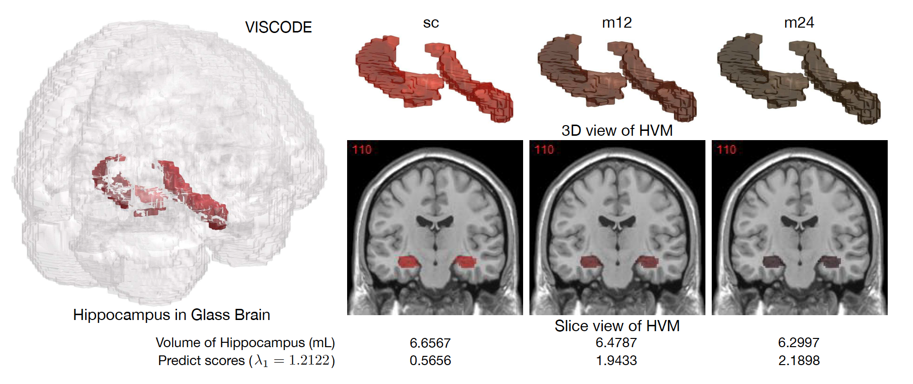
</li>
</ul>
<ul> 
<li><p style=font-size:20px><a href="https://ieeexplore.ieee.org/document/8953247">Cascaded Generative and Discriminative Learning for Microcalcification Detection in Breast Mammograms.</a> <br />
Fandong Zhang*, Ling Luo*, <b>Xinwei Sun</b>, Zhen Zhou, Xiuli Li, Yizhou Yu, Yizhou Wang. <br />
<i>IEEE Computer Society Conference on Computer Vision and Pattern Recognition <b>(CVPR)</b>, 2019. </p>
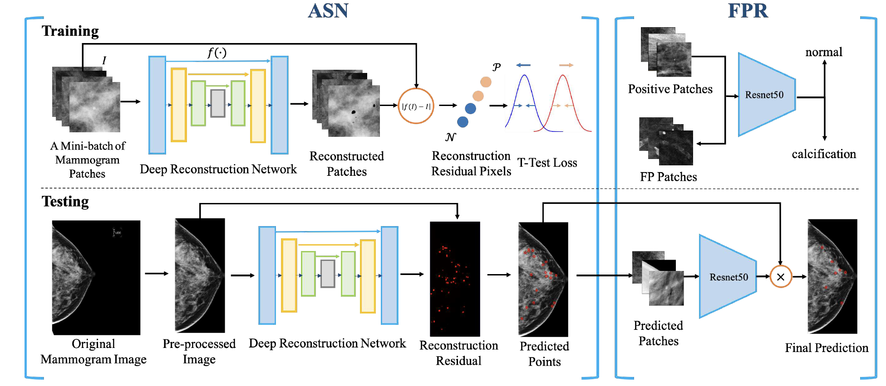
</li>
</ul>
<ul> 
<li><p style=font-size:20px><a href="https://ieeexplore.ieee.org/document/8658396">Zero-shot Learning via Recurrent Knowledge Transfer.</a> <br />
Bo Zhao, <b>Xinwei Sun</b>, Xiaopeng Hong, Yuan Yao, Yizhou Wang. <br />
<i>IEEE Winter Conference on Applications of Computer Vision <b>(WACV)</b>, 2019. </p>
</li>
</ul>
<ul> 
<li><p style=font-size:20px><a href="https://dl.acm.org/doi/abs/10.1145/3240508.3240597">A Margin-based MLE for Crowdsourced Partial Ranking.</a> <br />
Qianqian Xu, Jiechao Xiong, <b>Xinwei Sun</b>, Zhiyong Yang, Xiaochun Cao, Qingming Huang, Yuan Yao. <br />
<i>ACM International Conference on Multimedia <b>(ACM-MM)</b>, 2018. </p>
</li>
</ul>
</ul>
<h2>Research Interests</h2>
<ul>
<p style=font-size:20px> 1. Sparsity Learning and Statistical Inference.
<ul>
<p style=font-size:18px class="text-justify"> (1) Split Knockoffs for Multiple Comparisons: Controlling the Directional False Discovery Rate. <b>(JASA)</b>, 2023.</p></a> <br />

<p style=font-size:15px class="text-justify"> Multiple comparisons in hypothesis testing often encounter structural constraints in various applications. We propose an extended Split Knockoff method specifically designed to address the control of directional false discovery rate under linear transformations. Our proposed approach relaxes the stringent linear manifold constraint to its neighborhood, employing a variable splitting technique commonly used in optimization. This methodology yields an orthogonal design that benefits both power and directional false discovery rate control. By incorporating a sample splitting scheme, we achieve effective control of the directional false discovery rate, with a notable reduction to zero as the relaxed neighborhood expands. </p> 
</li> 
</ul> 
<ul> 
<div id="footer">
<div id="footer-text">
<br>Page generated 2023-06-18, by <a href="https://sunxinwei0625.github.io/sunxw.github.io/">Xinwei Sun</a>.
</div>
</div>
</div>
</body>
</html> 
